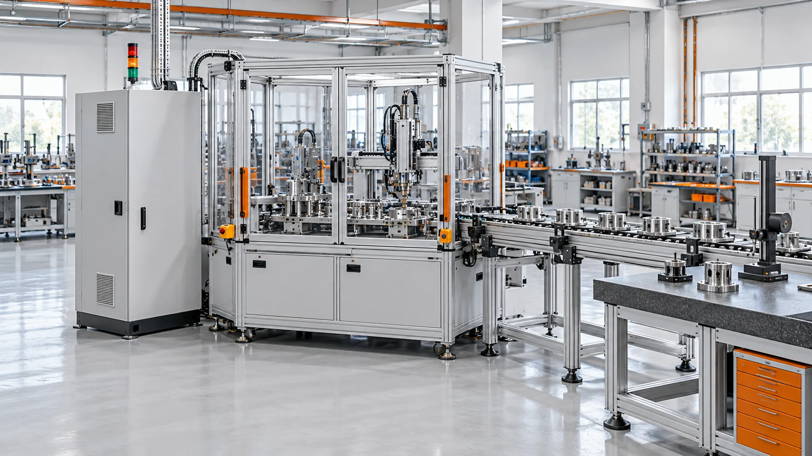
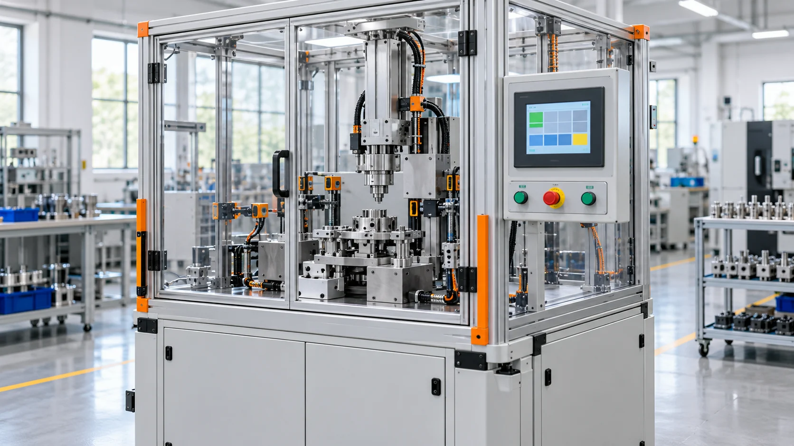
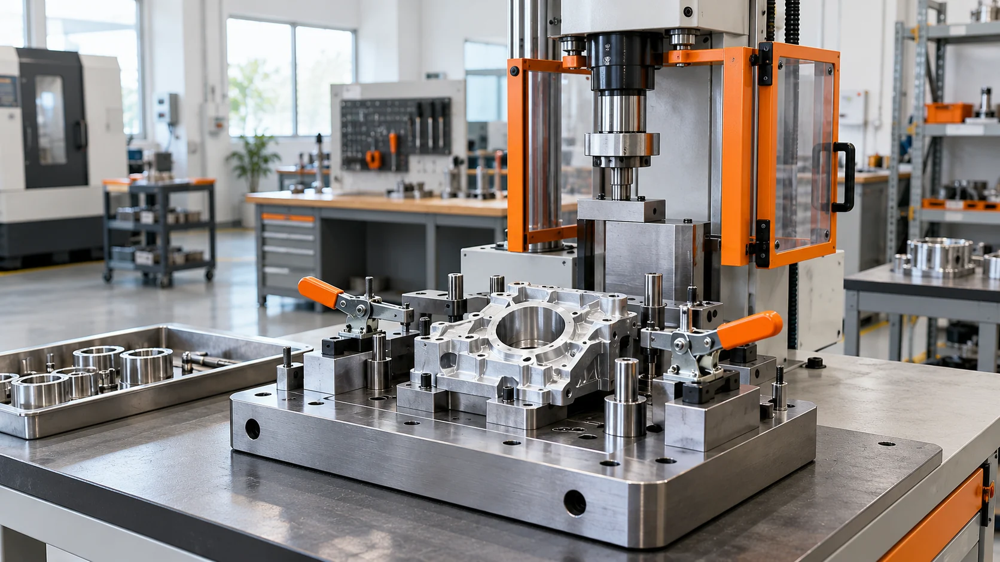
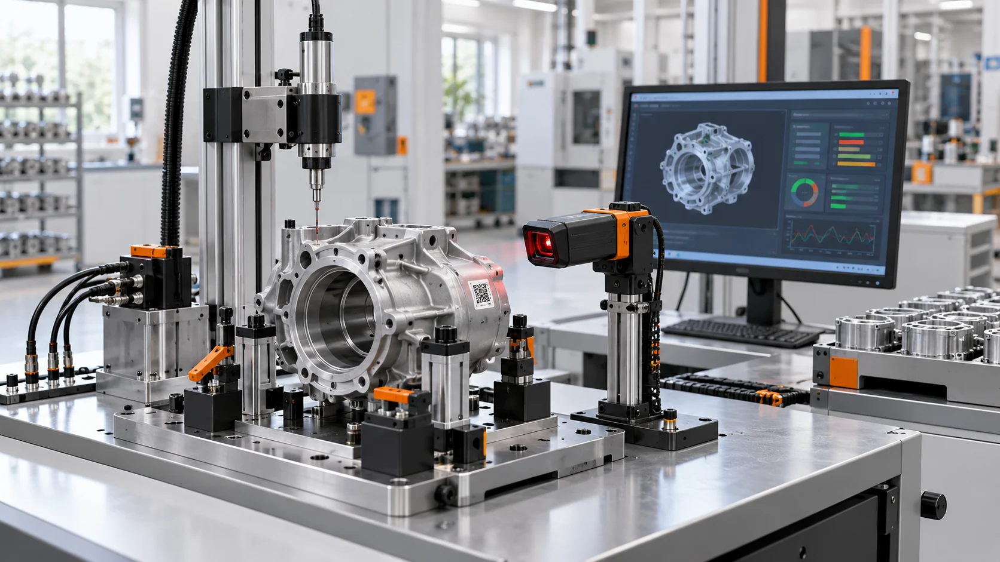
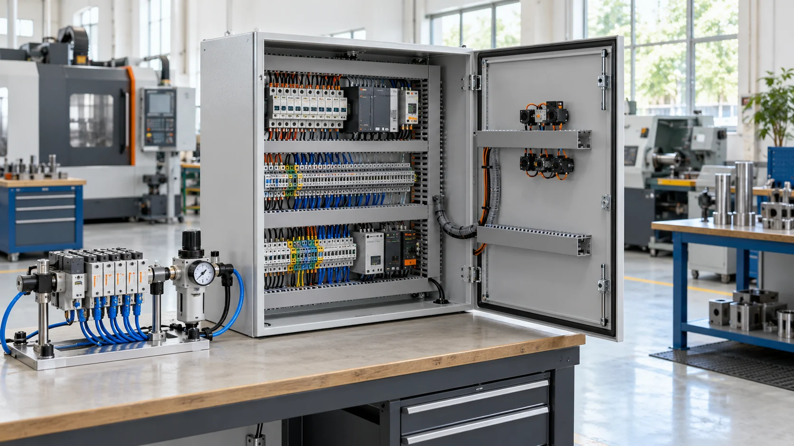
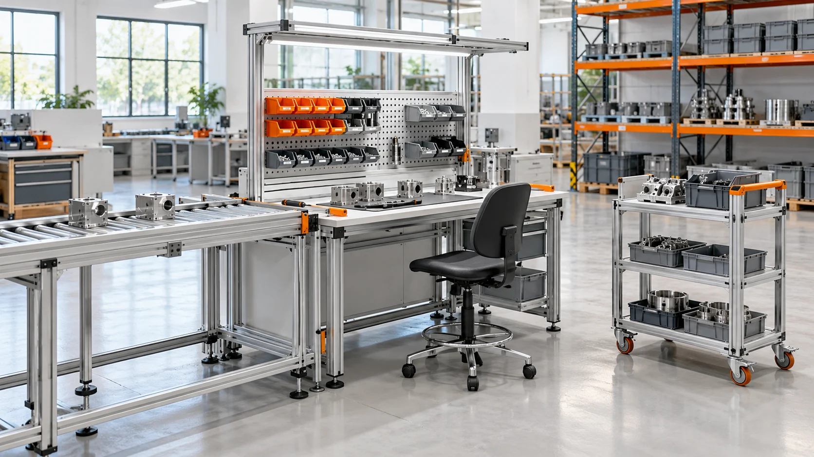
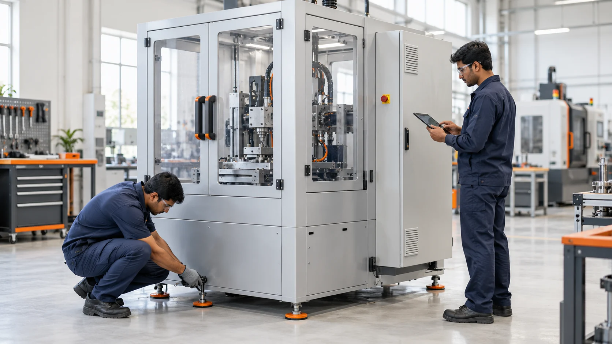

Services / IECS
The right engineering.
From start to finish.
Manufacturing process development, custom machinery, testing, electrical and fluid systems, material handling and ongoing plant support.
Explore our capabilities
Develop / Build / Support
01 / Capabilities
Automation & Controls
Manufacturing processes, assembly controls and control software developed around production needs.

Industrial & Low-Cost Automation
Automation solutions developed around manufacturing processes and assembly operations.
Discuss your requirementPLC & Control Software
PLC automation and control software design and development for machines and production processes.
Discuss your requirementManufacturing Process Development
Design and development of new manufacturing processes, including engineering control solutions for assembly.
Discuss your requirementAssembly Controls & Poka-Yoke
Control solutions and mistake-proofing provisions for assembly lines and conveyor operations.
Discuss your requirement02 / Capabilities
Machines & Tooling
Complete machine building, dedicated tooling and development for your component and process.

Special-Purpose & Custom Machines
Design, development, building and assembly of complete machines for specific production requirements.
Discuss your requirementPress Machines
Press machine solutions developed around the component and pressing operation.
Discuss your requirementMechanical Tooling & Fixtures
Design and development of mechanical tools, assembly tools, jigs, checking fixtures and fixturing solutions.
Discuss your requirementPrototyping & Sample Development
Prototype and sample development to support new components and manufacturing processes.
Discuss your requirement03 / Capabilities
Testing & Traceability
Production checks, part identification and process-data traceability.

Testing Setups & EOL Machines
Design and development of testing setups and end-of-line testing machines for production quality checks.
Discuss your requirementProcess & Data Traceability
Traceability solutions for recording and tracking process parameters and production data.
Discuss your requirementBarcode Scanning Systems
Barcode scanning systems to support identification and traceability within the manufacturing process.
Discuss your requirement04 / Capabilities
Electrical & Fluid Systems
Panels, industrial wiring and fluid-system controls for manufacturing equipment.

Control Panels & LT / HT Panels
Design and development of process control panels and LT and HT electrical panels, including control panel wiring.
Discuss your requirementIndustrial Wiring & Electrical Cabling
Industrial electrical distribution board (DB) wiring, electrical cabling and associated electrical work.
Discuss your requirementHydraulic & Pneumatic Controls
Design and development of hydraulic and pneumatic system controls for industrial applications.
Discuss your requirementPneumatic Pipelines
Pneumatic pipeline work for industrial equipment and manufacturing setups.
Discuss your requirement05 / Capabilities
Production & Material Handling
Assembly setups, ergonomic solutions, safety provisions and material movement.

Assembly Lines & Conveyors
Assembly line and conveyor setup with special tools and Poka-Yoke provisions to suit the process.
Discuss your requirementErgonomic Workstations & Safety
Ergonomic solutions for assembly operations, with machinery safety interlocks and guarding provisions.
Discuss your requirementStorage & Material Handling
Design and build of storage racks, bins, special trolleys and material-handling solutions.
Discuss your requirementFabrication & Engineering Works
Fabrication and engineering work for custom equipment, supports and manufacturing setups.
Discuss your requirement06 / Capabilities
Installation & Plant Support
Installation, maintenance and relocation services across the equipment lifecycle.

Machine Installation & Commissioning
Installation and commissioning of new machines and production equipment.
Discuss your requirementAnnual Plant Maintenance
Annual maintenance services for plant equipment and manufacturing machinery.
Discuss your requirementMachine & Plant Relocation
Machine relocation and shifting of manufacturing setups and industrial projects.
Discuss your requirementHoists & Jib Crane Installation
Installation and commissioning of lifting hoists and jib cranes.
Discuss your requirementLet’s make it work